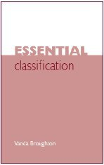

|  |
| About IR |
| Editors |
| Author instructions |
| Copyright |
| Author index |
| Subject index |
| Search |
| Reviews |
| Register |
| Home |
Broughton, Vanda. Essential classification. London : Facet Publications, 2004. xii, 324 p. 1-85604-514-5. £24.95.
This paperback was published in October 2004 and and represents the most recent addition to classification text books. The title may be a little misleading as the book also covers subject analysis and word based approaches such as lists of subject headings and thesauri. Thus, the book serves as a rather comprehensive introduction to the whole field of knowledge organization in libraries - with good practical overviews, summaries, exercises, a glossary, an index and a bibliography with suggestions for further reading
The major classification schemes are of course covered - LC, DDC and UDC, but the BC 2 is 'hidden' under the chapter heading Faceted classification. This chapter also contains some aspects of the history and theory of modern classification. The basis of this - and some of the introductory parts - is obviously the work of the Classification Research Group (Jack Mills has been the author's teacher, colleague and mentor for 30 years). The reviewer finds this part of the book the most interesting one. The various schemes are dealt with at an introductory level - without much critisism, if any.
A chapter on the management of classification is interesting, and this tiopic is also dealt with to some extent in the various schedule chapters.
This book is probably one of the better introductions we can offer students of LIS at the Bachelor level - or even Master students without previous LIS studies. It also may be suitable for beginning cataloguers. In general the library departments dealing with cataloguing and classification for various purposes may find it a useful addition to their working tools too.
Tor Henriksen
Oslo
March 2005
How to cite this review
Henriksen, T. (2005). Review of: Broughton, Vanda. Essential classification. London: Facet Publications, 2004. Information Research, 10(3), review no. R168 [Available at: http://informationr.net/ir/reviews/revs168.html]